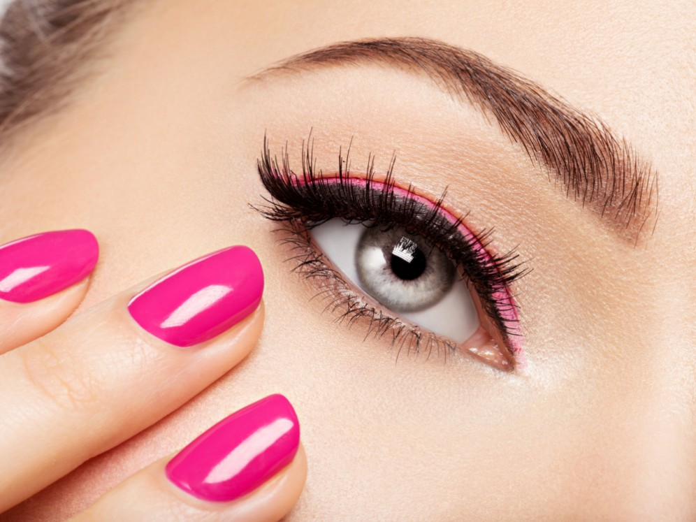

Lifting

Es un tratamiento que eleva la curvatura de tus pestañas, resaltando la expresión de la mirada y alargando las pestañas desde la raíz, sin utilizar pelo sintético. Es una solución rápida que reemplaza la búsqueda de la máscara de pestañas perfecta y te ayuda a obtener la largura y el volumen deseados.